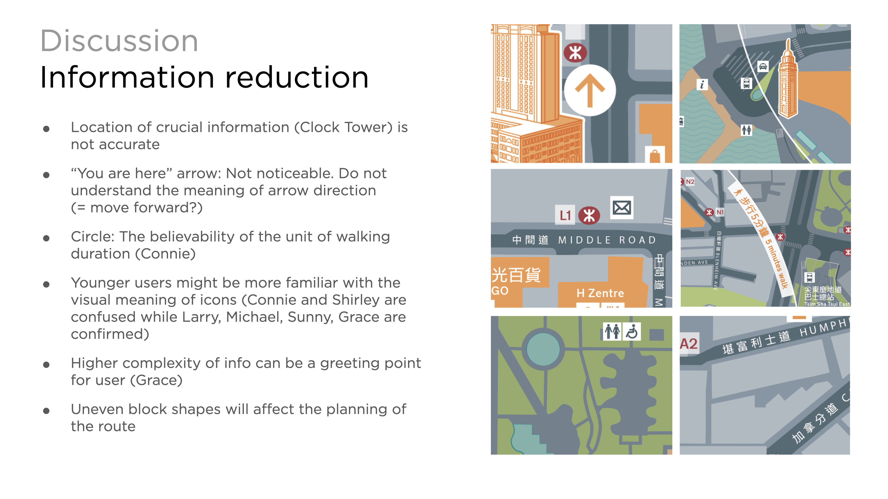
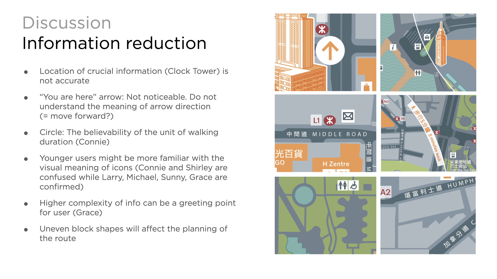
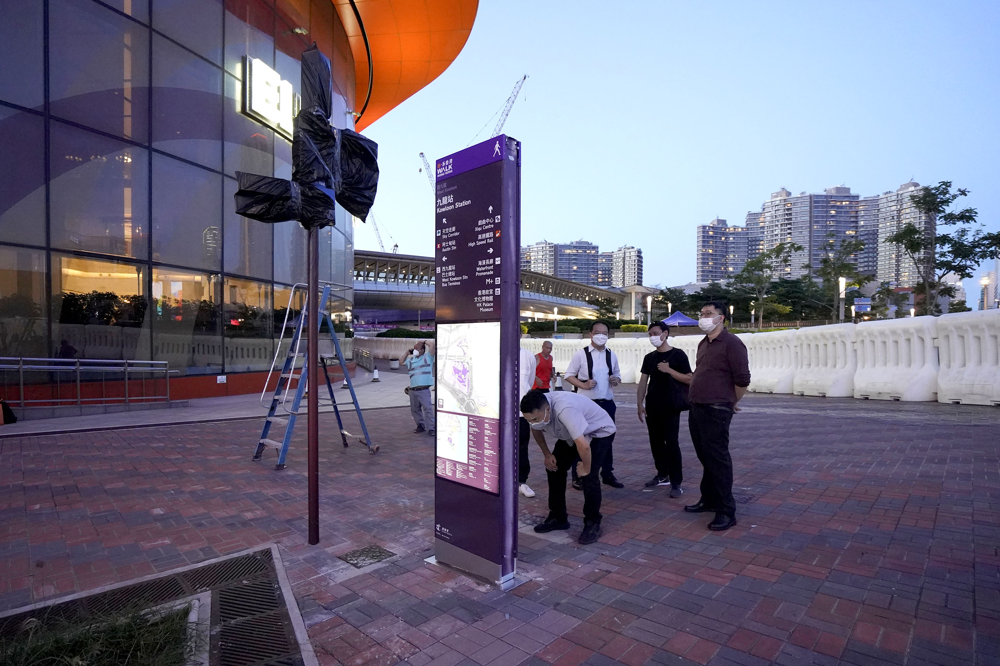
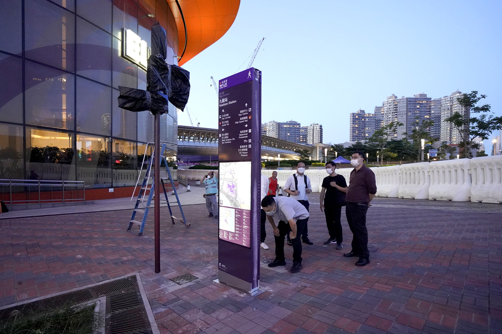

Project Overview
The objective of this UX research endeavor is to examine the effectiveness of the Wayfinding system offered by the Hong Kong Transport Department and the ARUP group, and devise design remedies that enhance the user experience.
My Contributions
My contributions to the Wayfinding project encompassed various tasks, including conducting a thorough literature review on guidelines and documents related to wayfinding systems. Additionally, I created a real-size prototype to be used for testing purposes, identified and recruited suitable testing users, and planned the test and survey questions to be used during the testing phase.Furthermore, I played a crucial role in organizing and running the user validation sessions, where the prototype and testing methods were put to the test. During these sessions, I facilitated user feedback and made necessary adjustments to the prototype based on user input, in order to improve the overall user experience.Overall, my contributions to the project were critical in ensuring that the wayfinding system was effective, efficient, and user-friendly, and that it met the needs and expectations of users.


 



 
